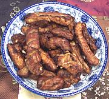

|
Sichuan Sweet & Sour Spare RibsChina - Sichuan | ||||
| Serves: Effort: Sched: DoAhead: |
4 app ** 2+ hrs Yes |
Much better sweet and sour ribs than those gooey florescent red things of Chinese takeout infamy. Good as a finger-food appetizer because it's not so messy. | |||
|
3 a/r ---- 2 4 2 1/2 1 3 3 ---- |
# --- in T T T T --- |
Pork Spare Ribs Oil for deep fry -- Marinade Ginger Scallions Chili, hot red (1) Salt Sugar Soy Sauce Rice Vinegar ----------- |
Prep - (1-1/4+ hr - 15 min work)
|